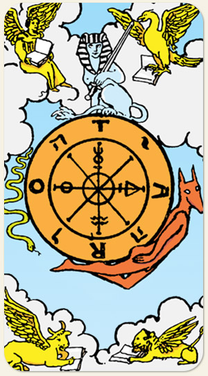

A Roda da Fortuna
Os altos e baixos da vida, o karma e a oportunidade. Ela nos ensina que, enquanto o mundo externo gira em ciclos de sucesso e fracasso, o equilíbrio real é encontrado no centro da roda, o ponto de paz interior que permanece imóvel enquanto tudo ao redor muda.
Fortuna e Sorte aqui são entendidos como Destino, e Destino aqui se entende como um quadro completo da obra, ele não mostra apenas o presente, mas o passado e o futuro. Porém, esse quadro é dinâmico, não apenas na roda que gira entre suas três partes, mas nos animais que, além de serem alados, possuem cada um seu próprio livro, além de trocarem informações entre eles, tanto em cima quanto embaixo, como uma forma de retroalimentação entre passado e futuro, entre carma e darma. Essa é a figura de uma reunião de conselho, onde o que está em pauta é a própria vida.
É uma foto do alinhamento dos planetas. A teoria do ROTA não parece fazer muito sentido por uma questão idiomática. Diferente da Sacerdotisa, que tem um pergaminho escrito Tora, seguindo o sentido o sentido horário, lê-se Tarot na Roda, no sentido contrário, a letra R ficaria invertida. A letra T não se repete como uma forma de indicar o caráter cíclico da Roda, da Vida, da existência, do Destino, onde final e início coincidem, ontem a linha de chegada é a mesma que linha de partida.
Os animais que apoiam na Roda não seguem sua direção, eles caminham livremente e de forma autônoma, mas isso não significa que eles estejam acima de qualquer lei, eles apenas possuem suas próprias leis, representam a parte da existência não revelada aos homens, aquilo que não somos capazes de entender.
Positivo: Boa fortuna, boa sorte, manter o ciclo, autoconhecimento, estratégia, estudar os recursos, recomeço, continuar tentando.
Negativo: Ventos contrários, azar, desfavorecimento, falta de visão do contexto, perder o eixo da roda, não saber qual parte da roda está emperrada, pessoa 'leva e traz'.
Amor e Sexo: Pessoas que estão na linha do destino do outro, rotina repetitiva, ciclos repetitivos, ter um parceiro bem sucedido ou com a vida redonda, só olhar para o próprio eixo, quem roda é outro, precisa de todo um alinhamento dos planetas para algo acontecer, relações em grupo.
Trabalho e Dinheiro: Previsibilidade, trabalhar com jogo de azar, com ocultismo, com tradução de símbolos ou de idiomas, investimentos, saída ou chegada repentina de dinheiro. Trabalhos que demandam estudos, certificações, concurso público.
Espiritualidade: Intervenções no destino, coisas que já foram feitas e agora é só esperar a situação se desenrolar. O Eremita olha para baixo, para dentro, para si, sua busca é interna, a estrela na lamparina é sua própria alma, seu ori, seu eu superior, só depois de entrar em contato com seu interior é que ele consegue ver e entender a Roda da Fortuna, vê o seu destino e o destino da coletividade, a visão celestial. O acerto de contas, o retorno de um feitiço que foi feito no passado.
Símbolos: Roda, Tarot, Yavé, Símbolos Alquímicos, Esfinge, Serpente, Hermanúbis, Os Quatro Seres, Nuvens, Espada, Livro.
Cores: Amarelo, Azul, Vermelho Cinza.
Elementos: Espírito e Espírito.
Signos: Touro, Escorpião, Leão e Aquário.
Referência: Os Quatro Seres Viventes, as Quatro Estações, as Quatro Direções, os quatro pontos da Astrologia, o Samsara, o meio das Estações, Efeito Borboleta (filme).